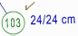

")
")
Wenn im Statikprogramm von FRILO geometrische Daten abgefragt werden, können diese aus der Zeichnung abgegriffen werden. Das gewünschte Statikprogramm muss auf dem Computer installiert sein.
|
Tipp: |
|
Bereiten Sie die Zeichnung so auf, dass möglichst wenige Elemente sichtbar sind. Zeichnen Sie Hilfslinien als Auflagerlinien auf die Wände, wenn die Stützweiten für das Durchlaufträgerprogramm übertragen werden sollen. Benutzen Sie den Elementfilter, damit beim Anklicken nur Geometrielinien gefangen werden. |

Berechnung mit einem F+L-Programm ausführen
Statische Positionen, die bereits mit einem FRILO-Statikprogramm berechnet wurden, sind durch einen Haken am Positionskreis gekennzeichnet.

§Klicken Sie den Positionstext der zu berechnenden Position an. [Welche Position].
Wenn die statische Position erstmalig berechnet werden soll:
§Wählen Sie im Dialog F+L Programme das gewünschte Statikprogramm und klicken Sie auf Starte F+L.
§Führen Sie die Berechnung im Statikprogramm aus und speichern Sie die Position abschließend.
Wenn Sie die statische Position erneut berechnen wollen, können Sie das jetzt verknüpfte Statikprogramm direkt aus der Zeichnung heraus starten (s. unten).
§Speichern Sie die Position nach erfolgreicher Berechnung.
Wenn eine bereits berechnete Position erneut berechnet werden soll (Haken am Positionskreis):
§Wählen Sie das Berechnungsprogramm:
automatisch |
Ruft das ursprünglich gewählte FRILO-Statikprogramm auf. Alle Eingaben werden in den Masken angezeigt. |
aus Liste |
Öffnet den Dialog F+L Programme zur Auswahl des gewünschten Statikprogramms. Wählen Sie das Statikprogramm und klicken Sie auf Starte F+L. |
F+L Programme (Dialogbeschreibung)
Auswahl und Aufruf eines FRILO-Programms zur statischen Berechnung der vorab in der Zeichnung gewählten Position.
Gesamte Programmliste
Auflistung aller zur Verfügung stehenden FRILO-Programme.
Favoriten
Auflistung der zuletzt bzw. häufig verwendeten FRILO-Programme.
Favoriten löschen
Löscht die Einträge in der Favoritenliste. (Die enthaltenen FRILO-Programme werden nicht gelöscht).
Starte F+L
Das ausgewählte Rechenprogramm wird gestartet.
Abbruch
Der Dialog wird Berechnung geschlossen. Sie können sofort wieder einen Positionskreis für eine statische Berechnung auswählen. [Welche Position].
Zugehörige Referenzen: